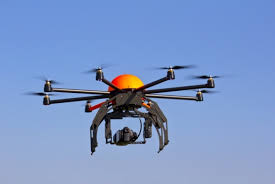

|
A quadcopter
A quadcopter, also called a quadrotor helicopter or quadrotor is a multirotor helicopter that is lifted and propelled by four rotors. Quadcopters are classified as rotorcraft, as opposed to fixed

Quadcopters generally use two pairs of identical fixed pitched propellers; two clockwise (CW) and two counter-clockwise (CCW). These use independent variation of the speed of each rotor to achieve control. By changing the speed of each rotor it is possible to specifically generate a desired total thrust; to locate for the centre of thrust both laterally and longitudinally; and to create a desired total torque, or turning force Quadcopters differ from conventional helicopters which use rotors which are able to vary the pitch of their blades dynamically as they move around the rotor hub. In the early days of flight, quadcopters (then referred to as 'quadrotors') were seen as possible solutions to some of the persistent problems in vertical flight; torque-induced control issues (as well as efficiency issues originating from the tail rotor, which generates no useful lift) can be eliminated by counter-rotation and the relatively short blades are much easier to construct. A number of manned designs appeared in the 1920s and 1930s. These vehicles were among the first successful heavier-than-air vertical take off and landing (VTOL) vehicles.[4] However, early prototypes suffered from poor performance,[4] and latter prototypes required too much pilot work load, due to poor stability augmentation[5] and limited control authority.
Videos |